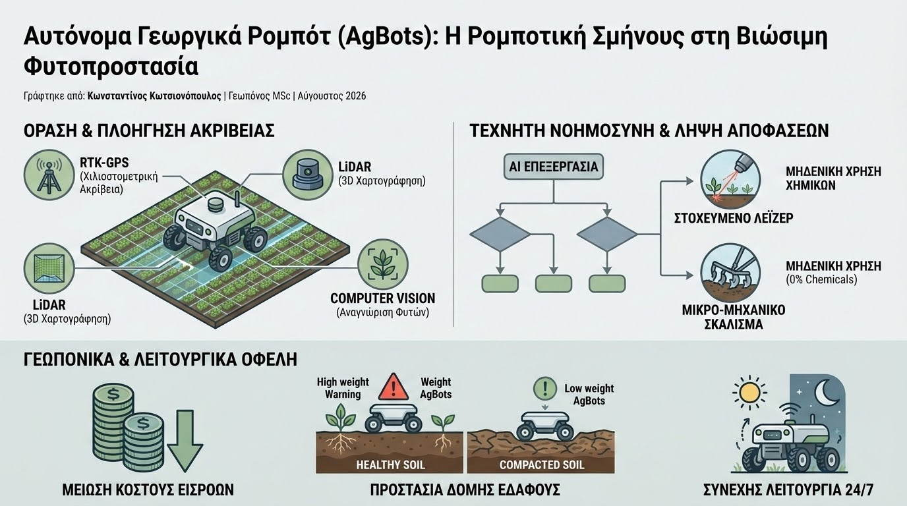

Η σύγχρονη γεωργία βρίσκεται αντιμέτωπη με μια διπλή πρόκληση: την οξεία έλλειψη εργατικού δυναμικού στο πεδίο και την επιτακτική ανάγκη για δραστική μείωση των συνθετικών χημικών εισροών. Η απάντηση της τεχνολογίας αιχμής σε αυτό το αδιέξοδο έρχεται μέσα από την ανάπτυξη των Αυτόνομων Γεωργικών Ρομπότ (AgBots) και τη χρήση Ρομποτικής Σμήνους (Swarm Robotics). Αντί για την εξάρτηση από μεμονωμένους, υπερμεγέθεις γεωργικούς ελκυστήρες, το νέο υπόδειγμα βασίζεται σε ομάδες μικρών, αυτόνομων ρομποτικών μονάδων που συνεργάζονται αρμονικά στο πεδίο.
Τα ρομπότ πεδίου συνδυάζουν προηγμένα συστήματα πλοήγησης RTK-GPS (Real-Time Kinematic) με αισθητήρες LiDAR και κάμερες υπολογιστικής όρασης (Computer Vision). Η τεχνολογία αυτή επιτρέπει στα AgBots να κινούνται αυτόνομα ανάμεσα στις γραμμές της καλλιέργειας με ακρίβεια χιλιοστού, αναγνωρίζοντας τη διαφορά μεταξύ των καλλιεργούμενων φυτών και των ζιζανίων. Μέσω αλγορίθμων τεχνητής νοημοσύνης, το ρομπότ επιλέγει τη βέλτιστη μέθοδο εξόντωσης του ζιζανίου —είτε μέσω μικρο-μηχανικής σκάλισης, είτε μέσω στοχευμένης εκπομπής παλμικού λέιζερ (Laser Weeding)— εκμηδενίζοντας την ανάγκη για εφαρμογή ζιζανιοκτόνων.

Ένα από τα σημαντικότερα γεωπονικά πλεονεκτήματα των AgBots είναι το χαμηλό τους βάρος. Η αλόγιστη αύξηση της μάζας των συμβατικών τρακτέρ προκαλεί βαθιά συμπίεση του εδάφους (soil compaction), καταστρέφοντας τους εδαφικούς πόρους, μειώνοντας τον αερισμό της ριζοσφαίρας και περιορίζοντας τη διήθηση του νερού. Η χρήση ελαφρών ρομπότ προστατεύει τη δομή του εδάφους και διατηρεί τη βιολογική δραστηριότητα του μικροβιώματος ανεπαφτη.
Τα επιστημονικά τεκμηριωμένα οφέλη της γεωργικής ρομποτικής περιλαμβάνουν:
- Εξάλειψη Χημικών Υπολειμμάτων: Η μηχανική ή με λέιζερ ζιζανιοκτονία ακριβείας μειώνει τη χρήση ζιζανιοκτόνων έως και 100% στις στοχευμένες ζώνες, αποτρέποντας την ανάπτυξη ανθεκτικών φυτικών βιοτύπων.
- Προστασία της Εδαφικής Δομής: Το μειωμένο βάρος των αυτόνομων συσκευών αποτρέπει τη συμπίεση των βαθύτερων εδαφικών οριζόντων, διατηρώντας την ικανότητα συγκράτησης υγρασίας και θρεπτικών.
- 24/7 Αυτόνομη Λειτουργία: Τα σμήνη ρομπότ μπορούν να επιχειρούν συνεχώς, εκτελώντας εργασίες σποράς, βοτανίσματος και χαρτογράφησης με σταθερή ακρίβεια, ανεξάρτητα από τις συνθήκες φωτισμού.
Η εισαγωγή των AgBots και της ρομποτικής σμήνους μετασχηματίζει την καθημερινή γεωργική πράξη, μετατρέποντας τη φυτοπροστασία σε μια αδιάλειπτη, καθαρή και απόλυτα ελεγχόμενη διαδικασία. Η τεχνολογική αυτή σύγκλιση αποτελεί τον βασικό πυλώνα για μια βιώσιμη, αποδοτική και περιβαλλοντικά υπεύθυνη Γεωργία 5.0.